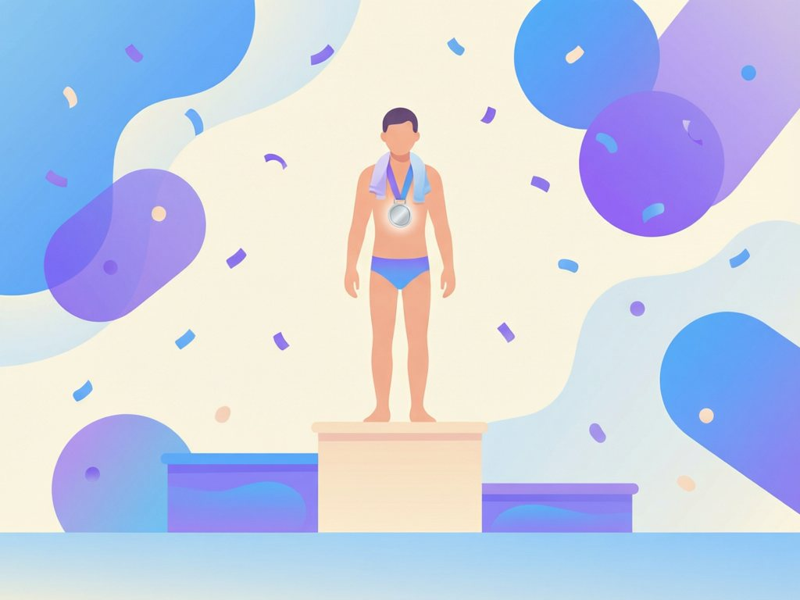
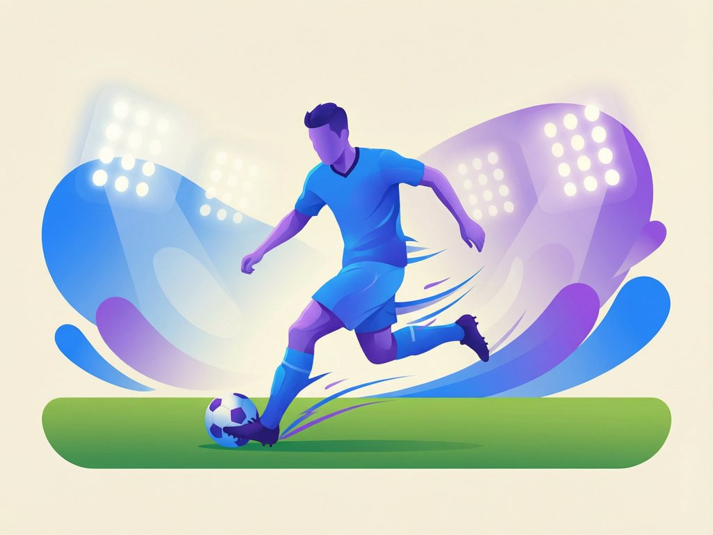
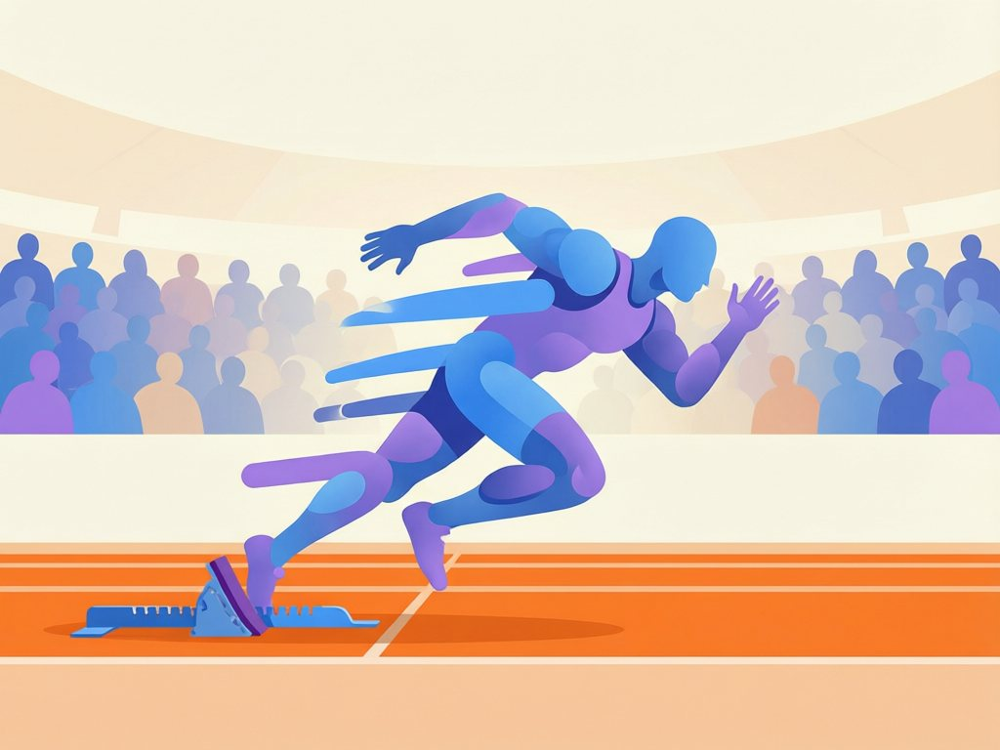

Sports & athletics
Competed, trained, and represented my schools in three sports. Every claim below has a photo or a result attached — mostly both.
Swimming
My first love, and still my strongest sport.


Pool record
I started swimming at nine and never stopped. For the past four years I’ve trained five mornings a week and represented my school at county-level galas, usually in freestyle sprints.
- Personal best, 50m freestyle — 31.2 seconds (2024).
- Silver medal, 100m freestyle — County Gala 2024.
- Reached the county finals three years running (2022–2024).
- Captain of the school swimming team, 2022.
Football
Weekend matches, inter-school league, and one very loud home crowd.

On the wing
I play right wing for my university’s second team and previously played three seasons for my high school side. I’m at my best running at defenders and putting in crosses.
- Inter-school league champions, 2023 season.
- Team top scorer, 2023 (11 goals in 14 matches).
- Selected for the district under-19 trial squad, 2022.
Athletics
Sprints in the dry season, cross-country when the rains come.

Track & cross-country
Athletics keeps me fast for football and fit for swimming. I ran the 100m and 200m for my high school team and spent two seasons on the cross-country squad.
- Silver medal, 200m — regional meet, 2022.
- Personal bests: 100m in 12.4s, 200m in 25.9s.
- Top 20 finish, county cross-country championship, 2022.
Looking for a teammate or a sports scholar?
I’m happy to share training records, coach references, and gala results on request.